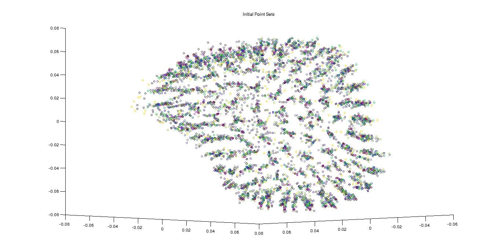
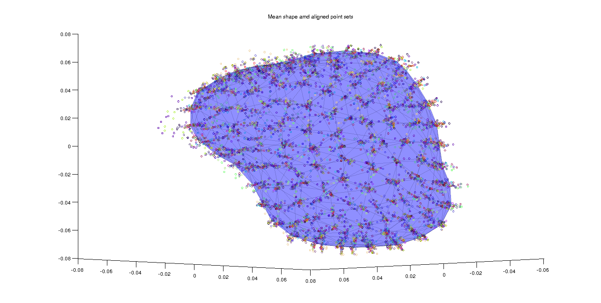
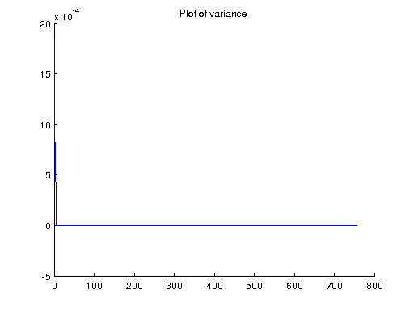
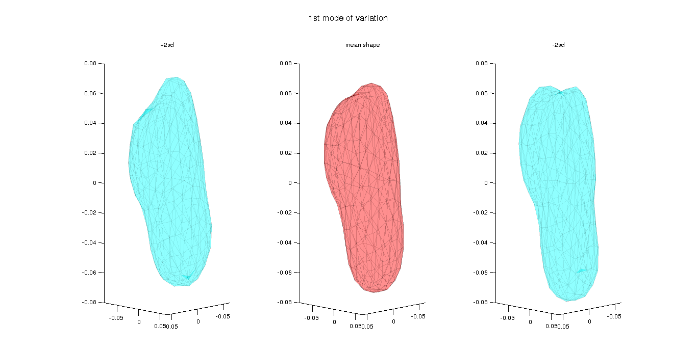
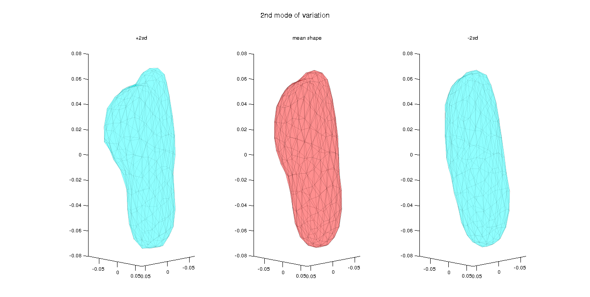
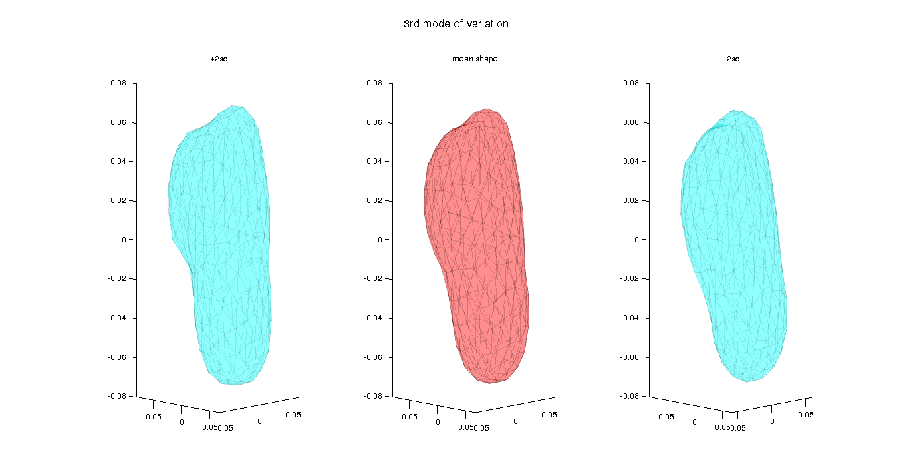

Contents
% clear all
clc
clear;
Load data
filename = '../data/bone3D.mat';
data = load(filename);
pointSets = data.shapesTotal;
triMesh = data.TriangleIndex;
[x numPoints numSets] = size(pointSets);
Plot initial point set
figure(1); hold on; title('Initial Point Sets'); for i=1:numSets scatter3(pointSets(1,:,i)', pointSets(2,:,i)', pointSets(3,:,i)',12,rand(1,3)); end hold off; view([1 1 0.1]) pause(10);
Preshape space
centroid = sum(pointSets,2)/numPoints; % subtract centroid preshapePointSets = pointSets - repmat(centroid,[1,numPoints,1]); % scaling norms = sqrt(sum(sum(preshapePointSets.^2,2),1)); preshapePointSets = preshapePointSets./repmat(norms,[3,numPoints,1]);
Compute mean shape
% parametrs threshold = 1e-7; % Initial values % Let's take first pointSet for initialising meanShape meanShape = preshapePointSets(:,:,1); error = 1; while(threshold < error) for i = 1:numSets % Given meanShape, find optimal transformations R = findRotation(preshapePointSets(:,:,i), meanShape); % Apply the transformation preshapePointSets(:,:,i) = R * preshapePointSets(:,:,i); end % Average all (aligned) pointsets optMeanShape = sum(preshapePointSets,3)/numSets; % normalize the optMeanShape optMeanShape = optMeanShape./sqrt(sum(sum(optMeanShape.^2))); error = sqrt(sum(sum((optMeanShape - meanShape).^2))); % update prevMeanShape meanShape = optMeanShape; end
Plot of computed shape mean, together with all the aligned pointsets
figure(2); hold on; title('Mean shape amd aligned point sets'); for i=1:numSets scatter3(preshapePointSets(1,:,i)', preshapePointSets(2,:,i)', preshapePointSets(3,:,i)',12,rand(1,3)); end patch('vertices', meanShape','faces', triMesh, 'facecolor', 'b', 'FaceAlpha', 0.25, 'EdgeAlpha', 0.1); hold off; view([1 1 0.1]) pause(10);
Covariance
pointSetsNew = bsxfun(@minus, preshapePointSets, meanShape);
vectorizedPointSets = reshape(pointSetsNew, 3*numPoints, numSets);
covariance = vectorizedPointSets*vectorizedPointSets'/numSets;
[V,D] = eig(covariance);
% To get descending eigenvalues
V = fliplr(V);
eigvals = flipud(diag(D));
sd3 = sqrt(eigvals(3));
sd2 = sqrt(eigvals(2));
sd1 = sqrt(eigvals(1));
Plot variance
figure(3); hold on; title('Plot of variance'); plot(eigvals); hold off; pause(5);
Principal modes of shape variation
2*sd along 3rd eigenvector
pmv31 = meanShape + 2*sd3*reshape(V(:,3),3,numPoints); % -2*sd along 3rd eigenvector pmv32 = meanShape - 2*sd3*reshape(V(:,3),3,numPoints); % 2*sd along 2nd eigenvector pmv21 = meanShape + 2*sd2*reshape(V(:,2),3,numPoints); % -2*sd along 2nd eigenvector pmv22 = meanShape - 2*sd2*reshape(V(:,2),3,numPoints); % 2*sd along 1st eigenvector pmv11 = meanShape + 2*sd1*reshape(V(:,1),3,numPoints); % -2*sd along 1st eigenvector pmv12 = meanShape - 2*sd1*reshape(V(:,1),3,numPoints);
Plot 1st mode of variation
figure(4) h(1) = subplot(1,3,1); patch('vertices', pmv11','faces', triMesh, 'facecolor', 'c', 'FaceAlpha', 0.25, 'EdgeAlpha', 0.05); title('+2sd'); view([1 1 0.1]) h(2) = subplot(1,3,2); title('mean shape'); patch('vertices', meanShape','faces', triMesh, 'facecolor', 'r', 'FaceAlpha', 0.25, 'EdgeAlpha', 0.1); view([1 1 0.1]) h(3) = subplot(1,3,3); title('-2sd'); patch('vertices', pmv12','faces', triMesh, 'facecolor', 'c', 'FaceAlpha', 0.25, 'EdgeAlpha', 0.05); view([1 1 0.1]) linkaxes(h) xlim([-0.06 0.06]) ylim([-0.08 0.065]) suptitle('1st mode of variation'); pause(5)
Warning: linkaxes requires 2-D axes as input. Use linkprop for generic property linking.
Plot 2nd mode of variation
figure(5) h(1) = subplot(1,3,1); patch('vertices', pmv21','faces', triMesh, 'facecolor', 'c', 'FaceAlpha', 0.25, 'EdgeAlpha', 0.05); title('+2sd'); view([1 1 0.1]) h(2) = subplot(1,3,2); title('mean shape'); patch('vertices', meanShape','faces', triMesh, 'facecolor', 'r', 'FaceAlpha', 0.25, 'EdgeAlpha', 0.1); view([1 1 0.1]) h(3) = subplot(1,3,3); title('-2sd'); patch('vertices', pmv22','faces', triMesh, 'facecolor', 'c', 'FaceAlpha', 0.25, 'EdgeAlpha', 0.05); view([1 1 0.1]) linkaxes(h) xlim([-0.06 0.06]) ylim([-0.08 0.065]) suptitle('2nd mode of variation'); pause(5)
Warning: linkaxes requires 2-D axes as input. Use linkprop for generic property linking.
Plot 3rd mode of variation
figure(6) h(1) = subplot(1,3,1); patch('vertices', pmv31','faces', triMesh, 'facecolor', 'c', 'FaceAlpha', 0.25, 'EdgeAlpha', 0.05); title('+2sd'); view([1 1 0.1]) h(2) = subplot(1,3,2); title('mean shape'); patch('vertices', meanShape','faces', triMesh, 'facecolor', 'r', 'FaceAlpha', 0.25, 'EdgeAlpha', 0.1); view([1 1 0.1]) h(3) = subplot(1,3,3); title('-2sd'); patch('vertices', pmv32','faces', triMesh, 'facecolor', 'c', 'FaceAlpha', 0.25, 'EdgeAlpha', 0.05); view([1 1 0.1]) linkaxes(h) xlim([-0.06 0.06]) ylim([-0.08 0.065]) suptitle('3rd mode of variation'); pause(5)
Warning: linkaxes requires 2-D axes as input. Use linkprop for generic property linking.